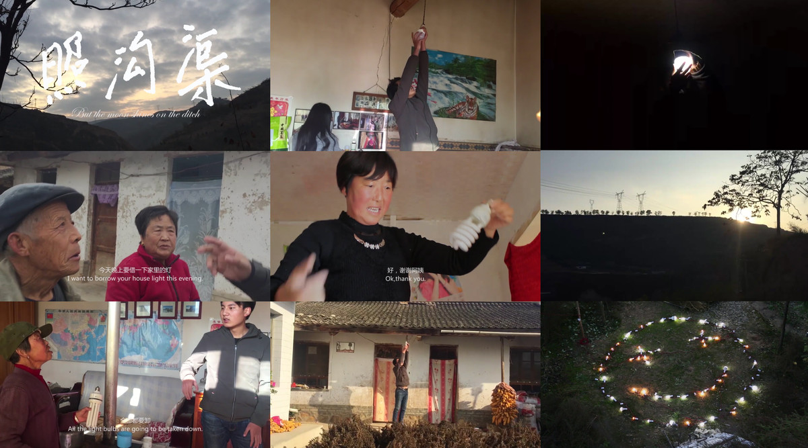
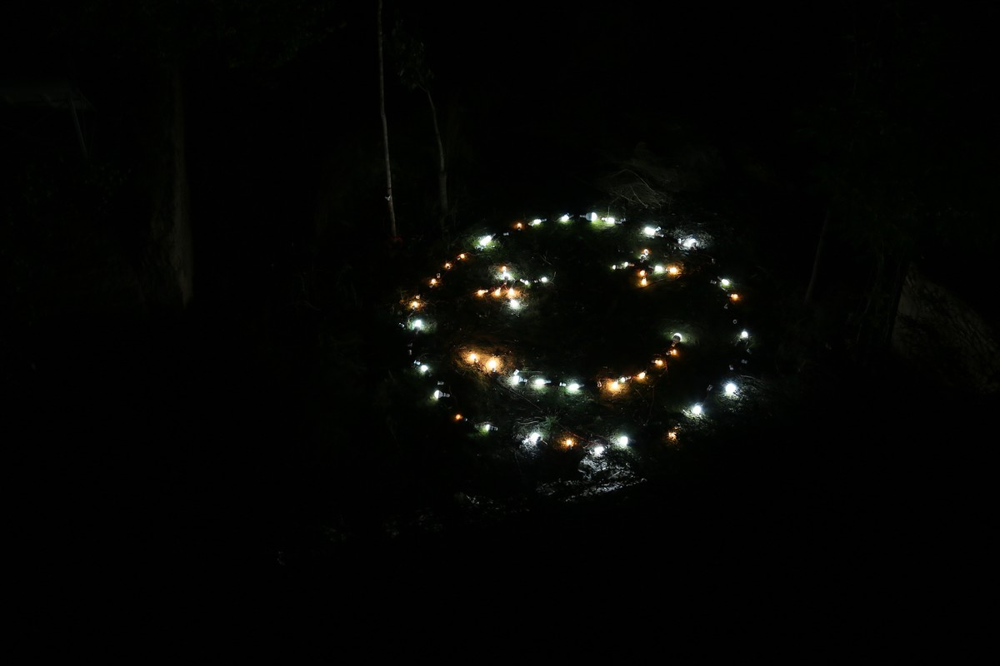
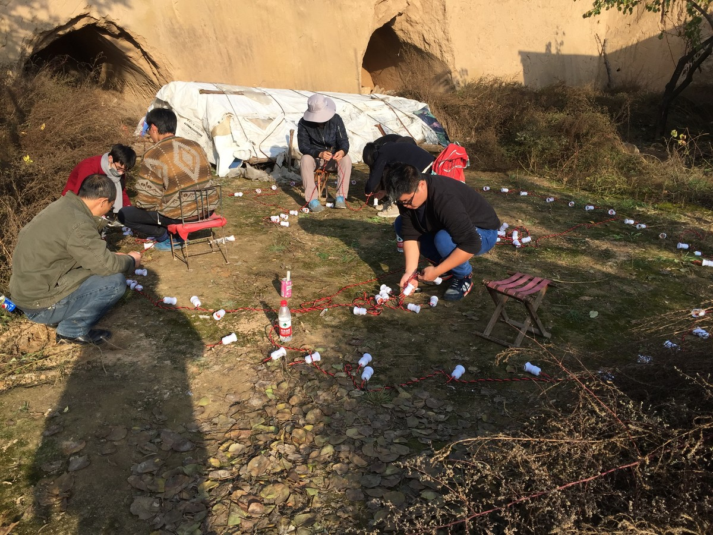
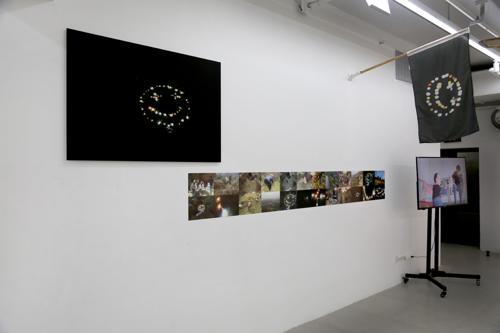

照沟渠 | BUT THE MOON SHINES ON THE DITCH

图片，数字微喷到纯棉纸基，尺寸为120x80cm ；录像，11分钟，单屏幕彩色，有声，可变尺寸 ，2017
Photographs, Archival inkjet print, 120x80cm; HD Video,11 minutes, Single-channel\Color\Sound\Variable, 2017
我本将心向明月，奈何明月照沟渠
——高明（元）《琵琶记》
My gaze toward the moon, but the moon shines on the ditch.
——GAO MING (Yuan) "PIPAJI"
2017年11月2日，艺术家在石节子村将所有村民正在使用的灯泡借过来一个晚上，在村边的山坡上组成了一个“微笑”。夜幕降临，当这个“微笑”被点亮的时候，整个村子处于一片黑暗。
On November 2, 2017, I borrowed all the lamps that were being used in 13 villagers' houses in ishijie for one night and used these bulbs to form a "smile" in the ravines on the edge of the village.

作品实施现场，石节子
Work site, Shijiezi

作品实施现场，石节子
Work site, Shijiezi

中国美术学院美术馆，杭州
China Academy of Art Museum, Hangzhou